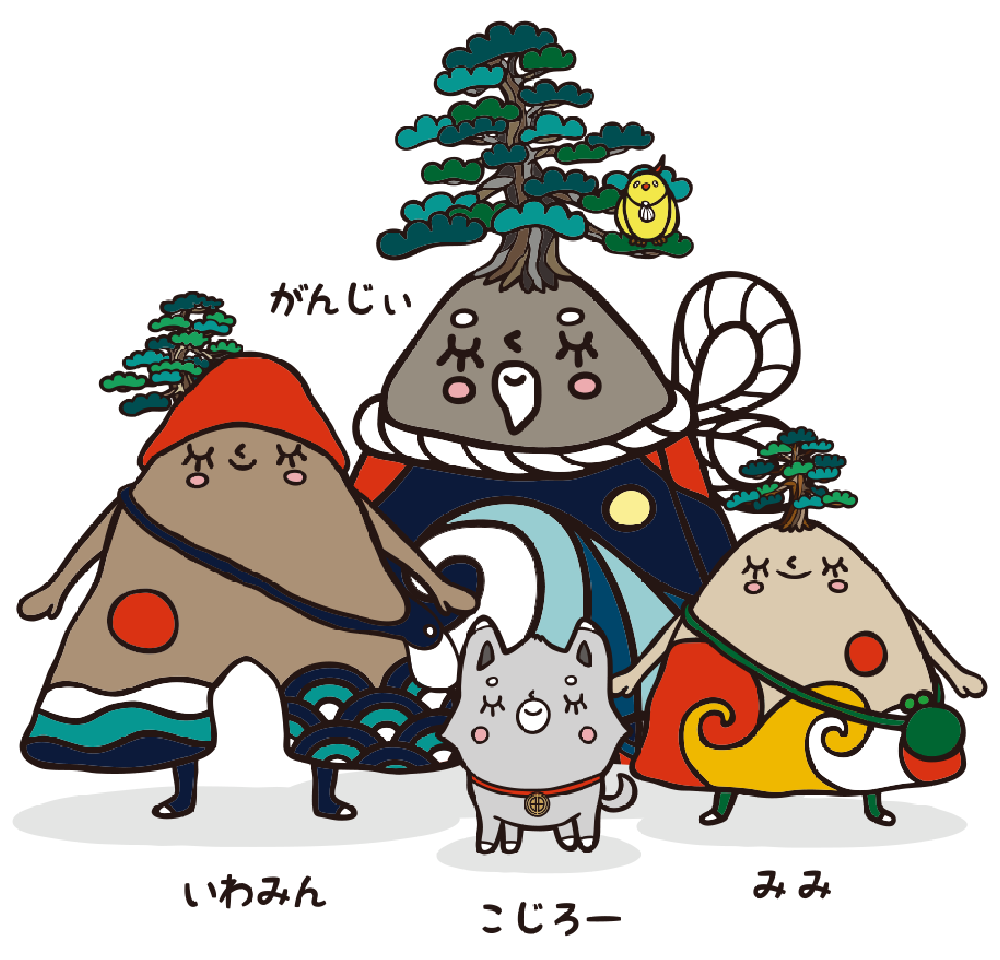

倉吉市イメージキャラクター
くらすけくん
プロフィール
里見八犬伝の八犬士に憧れて倉吉のまちにやってきた不思議な犬。人の温もりや優しさ､そしてどこか故郷のような懐かしさが漂うこのまちが大好きになって､お気に入りの白壁土蔵のキグルミを着て住み着いてしまいました｡
倉吉市公式ウェブサイト背景写真：円形劇場くらよしフィギュアミュージアム



三朝（みささ）町イメージキャラクター
いわみん、がんじぃ、みみ、こじろー
プロフィール
浦富（うらどめ）海岸にある奇岩「千貫（せんがん）松島」をモチーフにしています。 「千貫松島」は、同海岸の自然歩道沿いにあり、花崗岩に穴が開いた海食洞門。
岩美町公式ウェブサイト背景写真：浦富海岸松島遊覧船
湯梨浜（ゆりはま）町イメージキャラクター
やずぴょん
プロフィール
八頭町の白兎伝説に登場するシロウサギをイメージし、大型二輪車「隼」ライダーの聖地若桜鉄道「隼駅」に全国から訪れるライダーをイメージしてライダーズスーツを着ています。耳は、YAZUの頭文字「Y（ワイ）」を表しています。
八頭町公式ウェブサイト背景写真：隼駅まつり2023

琴浦町イメージキャラクター
若鬼（わかき）くん、桜子（さくらこ）ちゃん
プロフィール
若桜町内にある「若桜鬼ヶ城跡」にちなんで始まった「因州若桜鬼っこまつり」のマスコットキャラクターとして誕生した。若鬼くんはお祭大好きな男の子。桜子ちゃんは明るい性格で子どもたちとすぐに友だちになれる女の子。
若桜町公式ウェブサイト背景写真：わかさ氷ノ山スキー場

北栄（ほくえい）町イメージキャラクター
杉太くん、紅子ちゃん
プロフィール
（杉太くん）杉のまち智頭町としてのまちのシンボル「杉」をコンセプトに考案されました。（紅子ちゃん）那岐山の標高1,000m付近に群生する智頭町の町花「どうだんつつじ」をコンセプトに考案されました。
智頭町公式ウェブサイト背景写真：石谷家住宅